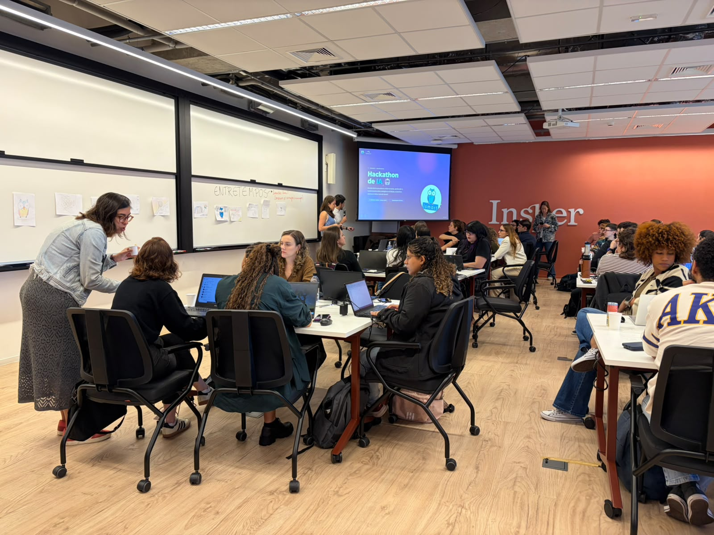
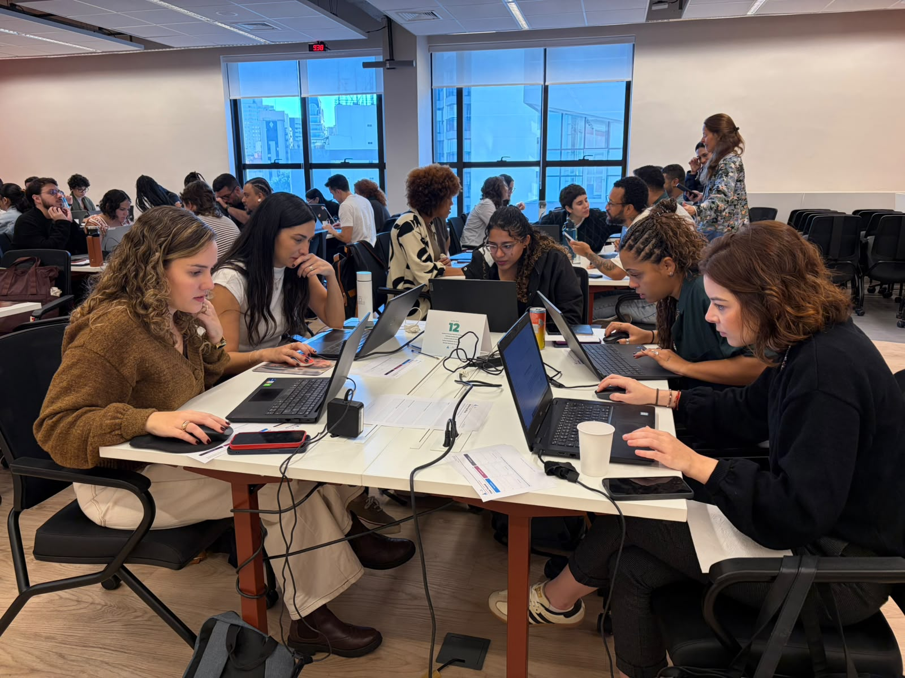
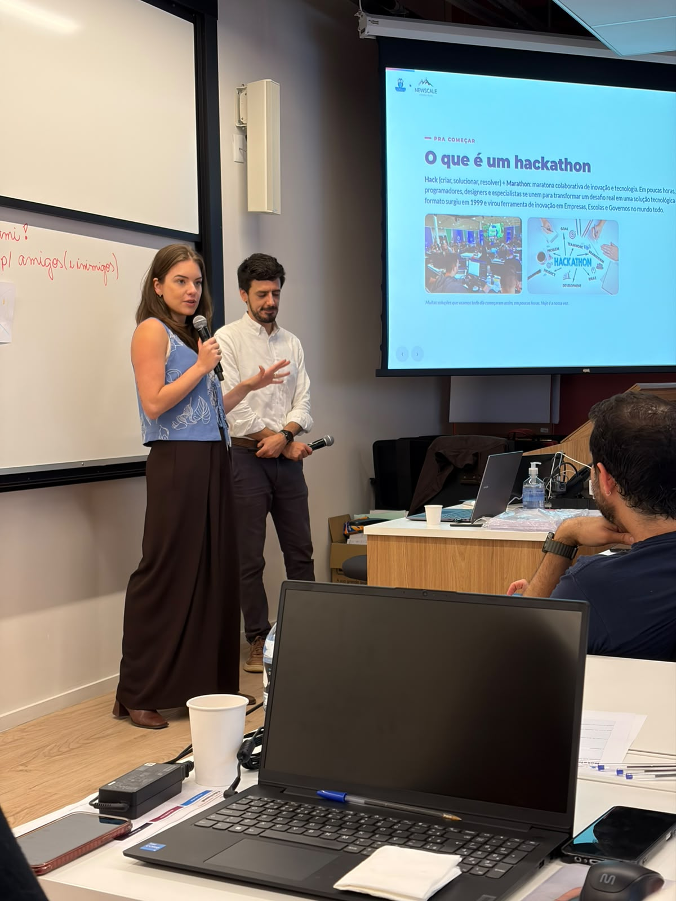
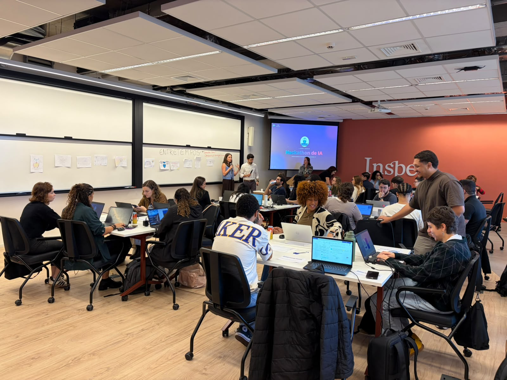

Um hackathon de IA na empresa é um dia em que o time para o trabalho normal, se divide em grupos e usa IA — Claude, principalmente — pra resolver um problema real da própria operação. Não é palestra nem curso teórico: as pessoas põem a mão na massa e apresentam uma solução funcionando no fim do dia. O objetivo não é ganhar prêmio, é o time descobrir, na prática, que consegue fazer aquilo sozinho na segunda de manhã.

Deixa eu te contar como foi de verdade. A gente chegou no Ismart com cerca de 70 colaboradores na sala — gente de áreas totalmente diferentes, a maioria que nunca tinha usado IA pra trabalhar de verdade. A minha maior preocupação não era a tecnologia. Era: será que essas 70 pessoas vão sair do "eu já ouvi falar de IA" pro "eu acabei de construir uma coisa que funciona"? Spoiler: saíram.
Por que um dia inteiro construindo bate qualquer palestra
Eu já dei muita palestra de IA. Palestra é boa pra inspirar, pra plantar a ideia. Mas no dia seguinte, sabe o que acontece? A pessoa volta pra mesa dela, abre o email, e a IA vira aquela coisa que "um dia eu testo". O hackathon resolve isso de um jeito meio bruto: ninguém sai da sala sem ter construído algo que resolve um problema que ela mesma tem.
A estrutura é simples de entender:
- Cada time escolhe um problema real da própria operação — não um caso fictício. O relatório que toma a tarde toda, a triagem de mensagens, a planilha que ninguém aguenta mais.
- Todo mundo trabalha ao mesmo tempo, com o Claude aberto, construindo a solução em linguagem natural. Sem código, sem jargão.
- No fim do dia, cada grupo apresenta o que fez — e o que fez tá rodando, não é slide bonito prometendo o futuro.

Repara na foto acima: é gente comum, das áreas de sempre, com o laptop aberto e o Claude do lado. Ninguém ali é programador. E é exatamente esse o ponto — a IA parou de ser assunto de área de tecnologia e virou ferramenta de todo mundo.
O maior ganho de um hackathon não é o projeto que sai pronto. É a mudança de cabeça. Depois de construir uma coisa que funciona no próprio dia, a pessoa nunca mais olha pra IA como "coisa complicada". Ela vira "isso eu resolvo com o Claude" — e isso ela leva pro resto do trabalho.
A energia de todo mundo construindo junto
Tem uma coisa que não cabe em relatório de ROI mas que é real: a energia da sala. Quando 70 pessoas estão construindo ao mesmo tempo, competindo de forma leve, mostrando pro time do lado o que descobriram, acontece uma coisa que treinamento sentado em fila nunca gera. Vira meio que uma maratona coletiva. As pessoas se empolgam, se ajudam, e o medo da IA some porque todo mundo tá errando e acertando junto.

Meu papel ali no começo é dar o tom e depois sair da frente. Eu abro explicando o formato, mostro exemplos, tiro o peso de cima de quem acha que "isso não é pra mim" — e aí solto os times. O resto do dia eu passo circulando de mesa em mesa, destravando, provocando, empurrando cada grupo um pouco além do que ele achava que dava.
Faça um hackathon de IA dentro da sua empresa
Eu monto o hackathon em cima da sua operação: os problemas são os seus, as soluções ficam com o seu time, e todo mundo sai sabendo usar IA de verdade — não em teoria. Do desenho do dia até a condução na sala.
O que o time construiu (e levou pra rotina)
No fim do dia, as apresentações sempre me surpreendem — e olha que eu já vi bastante. Os projetos não são fogo de palha. São soluções pequenas, específicas e úteis pro trabalho de quem construiu. Coisas do tipo: automatizar um relatório que levava horas, montar um assistente pra triar demandas, transformar uma planilha manual num fluxo que roda quase sozinho.
Cerca de 70 colaboradores, um dia, times competindo. Cada grupo pegou um problema da própria operação e, no fim do dia, apresentou uma solução rodando — não uma promessa. O que a gente ouviu mais foi "eu não sabia que dava pra fazer isso" — e essa frase, dita por 70 pessoas no mesmo dia, é o que muda uma empresa.

Vale a pena pra qualquer empresa?
Vale se você quer que a IA saia do PowerPoint e entre na rotina do time. O hackathon é o formato mais rápido que eu conheço pra isso: em um dia, uma empresa inteira passa de "a gente devia usar mais IA" pra "a gente usa IA, e sabe como". Ele funciona melhor quando é desenhado em cima da operação real da empresa — não com casos genéricos de internet.
Se você quer entender o resto do que a IA (e o Claude especificamente) consegue fazer no dia a dia antes de levar pro seu time, dá uma olhada no Guia do Claude — ele é a base de quase tudo que a gente constrói nesses dias. E se quiser ver outros formatos de treinamento além do hackathon, tá tudo em Treinamentos Corporativos.